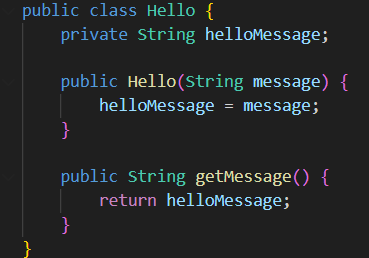
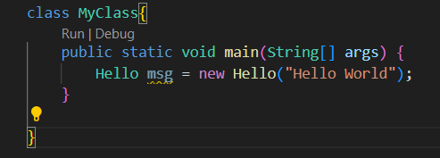
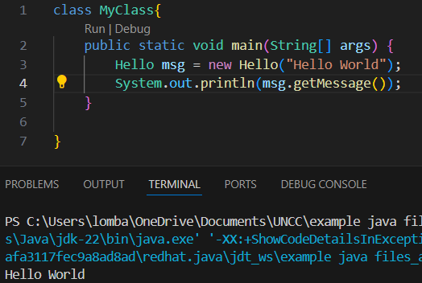

Object-Oriented Programming
Classes & Objects
Within Java we use Objects, self-contained entities that let us store & manipulate data, and Classes which we use to define these objects.
Classes
If you've seen the examples in "Getting Started" you've seen that we put our main method in "MyClass", but you can have many classes in different files in your program. Let's print "Hello World!" using a class we made.
There's a few things here you may be confused about, so let's go through it.
Instance Variables
This class ("Hello") has 1 variable associated with it: helloMessage. This is what we are going to print later. We'll have to assign this instance variable to a value in the constructor.
Constructors
Classes in java need a constructor, or a way to actually make objects of that class. The constructor must match the name of the class, thus them both being called "Hello". Within the constructor we've assigned our instance variable to the parameter in our Hello constructor. When we build a Hello object later we're going to specify what the message will be.
Getters & Setters
Notice that "private" word next o helloMessage? This means that variable is only accessible within this current class. What if we want to retrieve the message belonging to this Hello object, but can't access that variable? We make a Getter. The public String getMessage() method will return the value of that variable.
Objects
Let's actually make that Hello object now.
We've done it! Here's our new object, contained in the msg variable. Notice we've placed the message we're going to print later inside the parenthesis. Let's retrieve that now.
All done! We've created a Hello object with our own message passed in, and used the getter method to retrieve the message within it. This should give you a basic understand of classes & objects in java.
Lombard Designs ©2025, Certified in Responsive Web Design, JADS